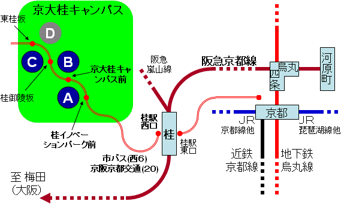
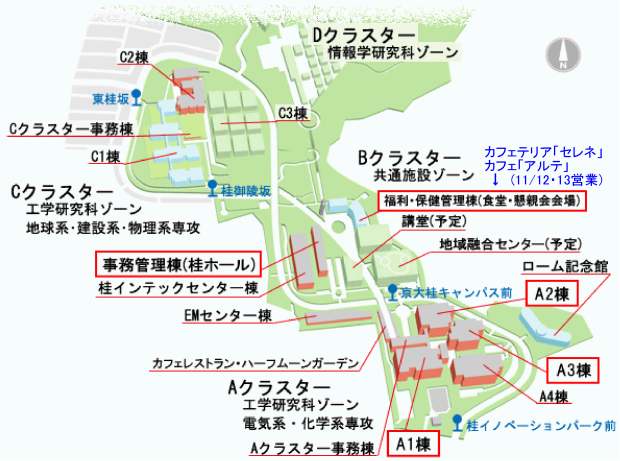
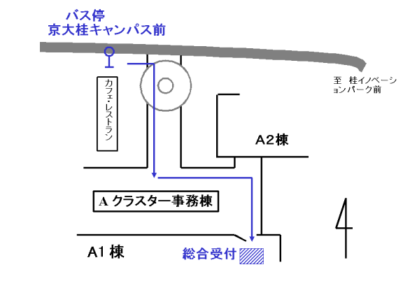
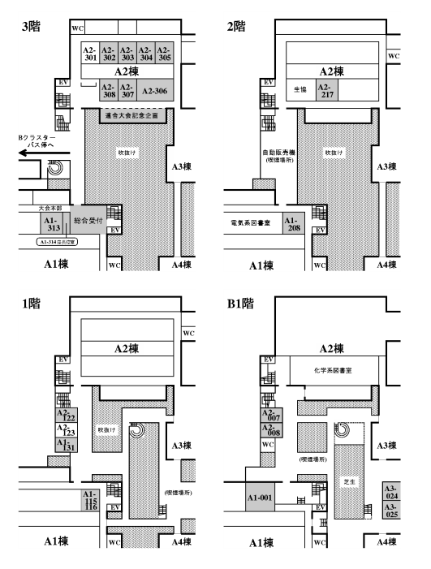

会場
| 京都大学 桂キャンパス（〒615-8510 京都府京都市西京区京都大学桂） |
| Aクラスタ A1棟A2棟A3棟A4棟，Bクラスタ 事務管理棟 |
アクセス
| 阪急京都線桂駅より市バスまたは京阪京都交通バスにて約17分， |
| 京大桂キャンパス前バス停で下車． |
| ※ お車でのご来場はご遠慮ください． |
|
交通機関略図

| 時間 | 市バス「西6」系統 (H17.3.12改正) | 京阪京都交通「20」系統 (H17.4.1改正) | |
|---|---|---|---|
| 土曜日 | 日曜日 | 土日共通 | |
| 7 | 03 26 58 | 18 | 00 20 40 |
| 8 | 33 33 | 33 46 | 00 20 40 |
| 9 | 01 28 55 | 40 | 00 20 40 |
| 10 | 20 | 25 | 00 20 40 |
| 11 | 08 35 | 05 40 | 00 20 40 |
| 12 | 08 38 | 15 45 | 00 20 40 |
| 13 | 08 48 | 15 45 | 00 20 40 |
| 14 | 20 48 | 15 45 | 00 20 40 |
| 15 | 18 45 | 15 45 | 00 20 40 |
| 16 | 15 45 | 15 45 | 00 20 40 |
| 17 | 16 | 16 46 | 00 20 40 |
| 18 | 01 26 | 11 46 | 00 20 40 |
※ 赤字は、本大会期間中の増発便です。どうぞご利用下さい。
会場詳細
| 大会本部 | AクラスターA1棟A1-313号室 |
| 総合受付 | AクラスターA1棟3階ロビー |
| 座長控室 | AクラスターA1棟A1-314号室 |
| 招待者控室 | Bクラスター事務管理棟3階会議室 |
| 特別講演・パネルディスカッション | Bクラスター事務管理棟 桂ホール |
| 連合大会第60回記念企画 | AクラスターA2棟3階ラウンジ |
| シンポジウム・一般講演 | AクラスターA1棟, A2棟, A3棟会場 |
| 食堂 | こちらをご覧下さい． |
| 懇親会場 | Bクラスター福利・保健管理棟1階ラ・コリーヌ |
桂キャンパス内案内図

バス停（京大桂キャンパス前）から総合受付まで

会場（Aクラスター）

| Bクラスター | カフェテリア「セレネ」 |
|---|---|
| （福利・保健管理棟） | (11/12 11:00〜14:00, 11/13 11:30〜13:30(特別営業) |
| カフェ「アルテ」 | |
| (11/12・13 11:00〜18:00) | |
| Aクラスター | カフェレストラン「ハーフムーンガーデン」 |
| (11/12のみ 10:00〜15:00) | |
| ベーカリーカフェ「リューヌ」 （ハーフムーンガーデン隣） | |
| (11/12 8:00〜20:00, 11/13 8:00〜17:00) |